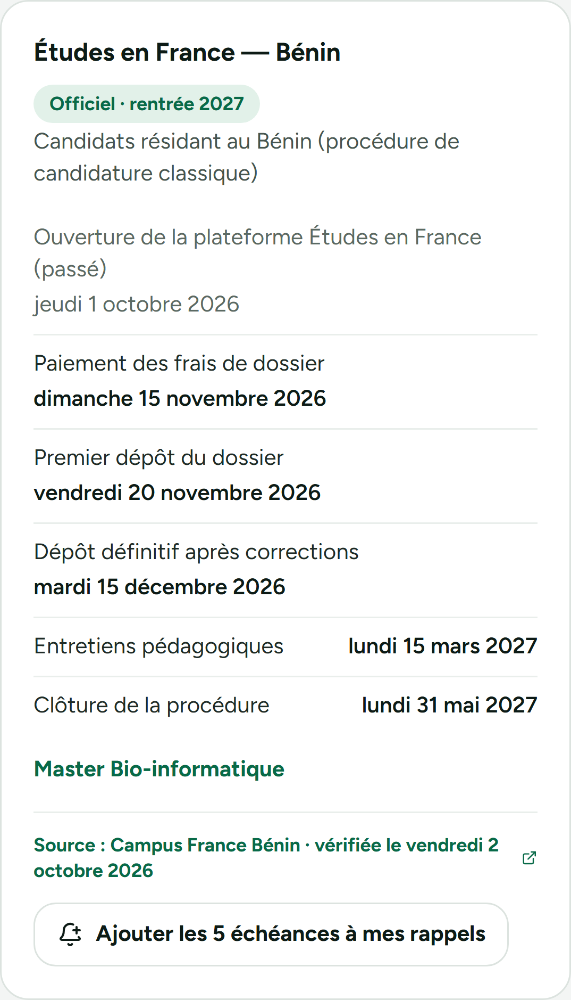

Cotonou · octobre 2026
Aïcha vise un master en France.
Elle se cale sur les plateformes françaises…
…qui ferment mi-mars.
Mais elle réside au Bénin.
Sa date limite Campus France : 15 décembre.

AcadMatch lui affiche le calendrier officiel de son pays…
…et ajoute les échéances à ses rappels.
Ne te cale pas sur la mauvaise date.
Histoire illustrative · Dates : calendrier officiel Campus France Bénin, rentrée 2027